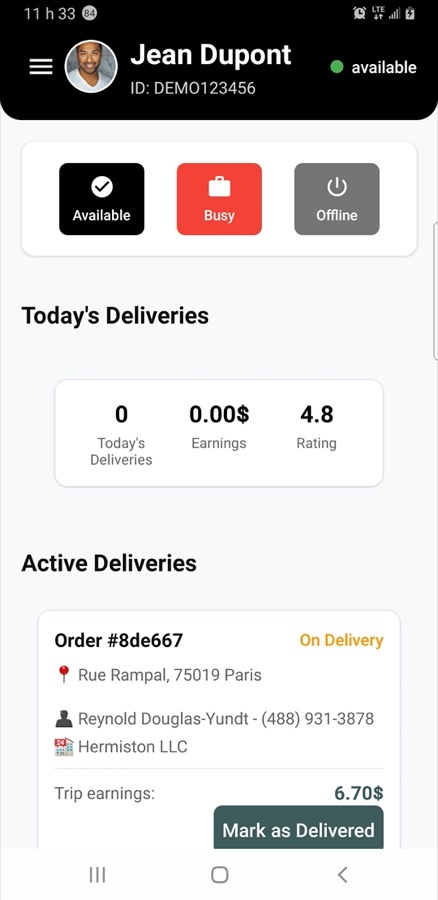
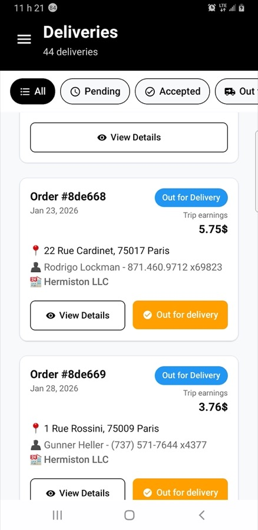
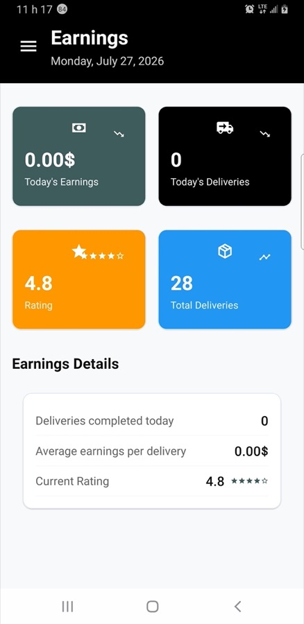

Driver app
Built for couriers on the road: see new jobs, stack nearby drops, update every mile of the delivery, prove the handoff, and check earnings — without spreadsheets or endless phone calls.
For buyers and ops leads who need to know what drivers experience, and for teams wiring the same API the rest of the suite already uses.
The last mile, in one pocket
Customers order. Kitchens cook. Drivers deliver. This app is that third act: accept a job, navigate to the restaurant, carry the bag, mark each status, and finish with confidence at the door. It talks to your hosted API — assignments, profile, and stats download after login.
Last-mile depth includes job batching, live map tracking, and proof of delivery (photo + signature). Couriers can also join membership tiers — see Monetization.

Home — on duty and ready for jobs

Deliveries — today’s jobs

Earnings — what the shift paid
Login needs a driver account
Email and password work like any user, but the server must recognize a driver profile. A pure customer account will be rejected — create or promote a driver user before testing.
Designed for thumbs, not desks
Large targets, clear labels, and a side menu for home, deliveries, money, history, reports, support, profile, vehicle, and settings. Drivers open a delivery for details and route, advance pickup and drop-off, and keep moving. Maps and GPS power navigation when you grant location — keys and permissions are covered in Getting Started.
Main Function
Keep couriers connected to live orders: they see what to deliver, advance the order through each stage, and track how much they have earned—all from one app.
Behind the scenes, the app remembers who is logged in, refreshes lists of jobs, and can cache some data so screens still feel responsive if the network is slow.
For a technical mental model: one shared "driver context" supplies login state, orders, and statistics to the screens so everything stays in sync after an action.
How screens are organized
When the app opens, the driver briefly sees a splash screen, then a login screen if they are not signed in. After a successful login, they land in the main area with a side menu (drawer) listing Home, Deliveries, Earnings, Transactions, History, Reports, Notifications, Support, Profile, Settings, and more.
Some screens open on top of others (for example delivery details or order details) and may not appear as separate items in the side menu—that is normal.
Developers: the flow is implemented with React Navigation (stack for splash/login/main, drawer for the day-to-day hub). Files live under navigation/.
Configuration & demo mode
Day-to-day settings such as API address, demo login shortcuts, and timeouts
are edited in config.js at the root of the delivery-app folder (not inside a config/ subfolder).
With demo mode turned on, the login form can be pre-filled for presentations. Turn it off in production and
point API_BASE_URL at your live server. The app sends requests through a single api.js module that handles tokens and errors in one place.
Supported Platforms
- Android (package name
com.goodfood.driver) - iOS (same bundle identifier)
One shared codebase builds both platforms with Expo and React Native, so drivers get a consistent experience on phones and tablets.
That also means you fix a bug or add a feature once, then ship updates to Android and iOS from the same project.
Tech Stack
The driver app is a standard React Native + Expo mobile client. It calls your HTTP API for auth, orders, profile, and settings.
Optional libraries (animations, bottom sheets, etc.) are listed in package.json if you need the full list for audits or upgrades.
Run the backend from the suite (for example my-backend), set API_BASE_URL in config.js,
and follow Getting Started to run the app locally.
Project structure
High-level layout of the delivery-app repository (representative; the repo contains additional screens, hooks, and utilities).
-
📄 App.js
-
📄 api.js (REST client, auth, orders, driver)
-
📄 config.js (API URL, demo, maps key)
-
📄 global.js (theme, colors)
-
📄 i18n.js
-
📁 navigation/ (9 files)
- 📄 AppNavigator.js, DrawerNavigator.js
- 📄 DeliveriesStackNavigator.js, ProfileStackNavigator.js
-
📁 screens/ (20+ screens)
- 📄 HomeScreen.js, DeliveriesScreen.js, DeliveryDetailsScreen.js
- 📄 EarningsScreen.js, ReportsScreen.js, SettingsScreen.js
-
📁 components/ (61+ files)
- 📄 DeliveryCard.js, DriverStats.js, RatingStats.js
- 📄 OrderHeaderCard.js, OrderItemsCard.js, TransactionList.js
- 📁 hooks/ (20+ hooks)
- 📁 utils/ (16+ helpers)
- 📁 contexts/ (2 files)
- 📁 lang/ (i18n EN/FR/ES/AR)
App.js → driver/settings providers → main navigator. See README files in the repo for deeper detail.
Current Version
1.0.0
This matches package.json and the Expo app config. The name people see on the home screen is Good Food Pro Driver.
Version 1.0.0 aligns with the customer app baseline in this documentation suite — a solid base for internal testing, demos, and custom branding before you publish to the stores.
What you need to run the app
Shared setup (Node.js, Expo, API URLs, Maps) is on Environment setup.
For drivers you also need a running Good Food API and at least one account promoted as a driver on the backend.
Then open delivery-app, set API_BASE_URL in config.js, and follow
Getting Started.